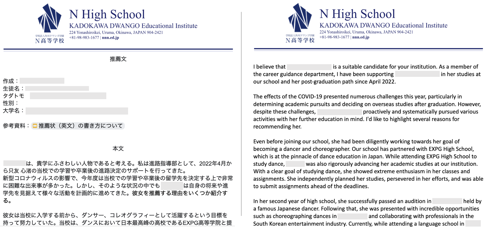

@Free Web Hope
Feb 2024 - Present
Free Web Hope is a digital marketing agency located in Tokyo.
In this internship, my responsibilities involve using LLM services such as ChatGPT, Midjourney, and Builder.io to create promotional copywritings, applications, and websites.
An example of my creation:
Simply input the URL in the prompt box, and I will help you create compelling promotional copywriting based on the product or service offered by the URL.
Translator
@Dwango N High School
Oct 2022 - Present

Established in April 2016 in Uruma City, Okinawa, N High School (Kadokawa Dwango Educational Institute) is a credit-based regional correspondence high school.
The institution fosters a flexible learning environment by leveraging Information and Communications Technology tools, allowing students to learn at their preferred pace.
My involvement includes offering translation services for converting recommendation letters from Japanese to English.
To date, I have successfully translated over 30 letters, totaling more than 20,000 words.
Account Manager of Chinese Social Media
@Yamada Bee Farm
Apr 2021 - Jul 2022
I held a position in the overseas sales department of a Japanese cosmetic and supplement company.
In this role, I oversaw official accounts across diverse social media platforms and fostered collaborations with business partners
in Japan, mainland China, Taiwan, Vietnam, and Singapore.
This experience notably contributed to the development of my adept communication and negotiation skills.
It was during this period that my interest in both social media research and the practical applications of natural language processing in business was sparked.